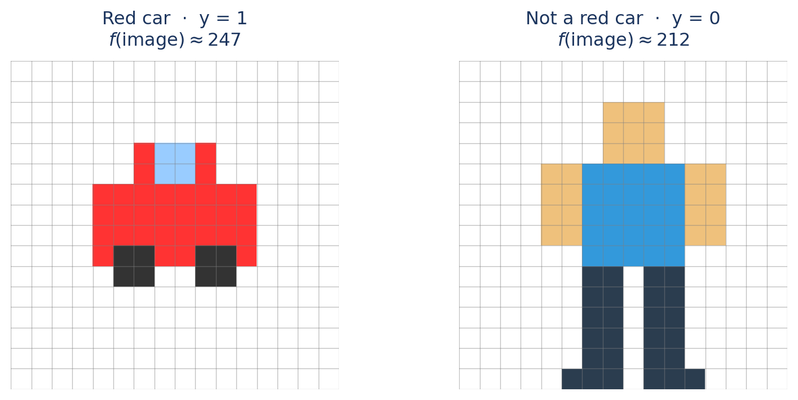
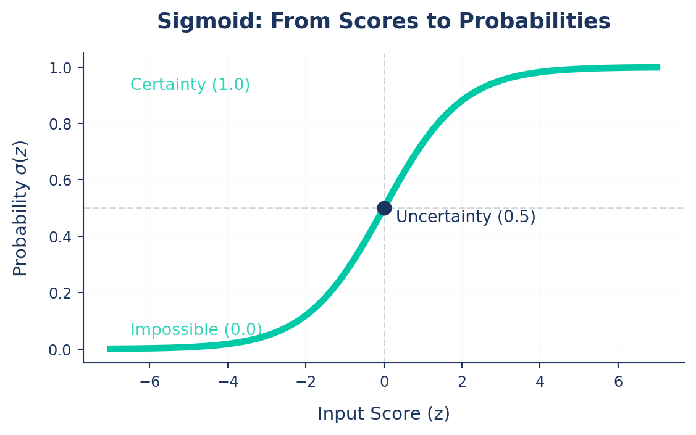
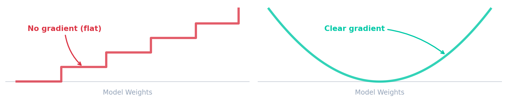
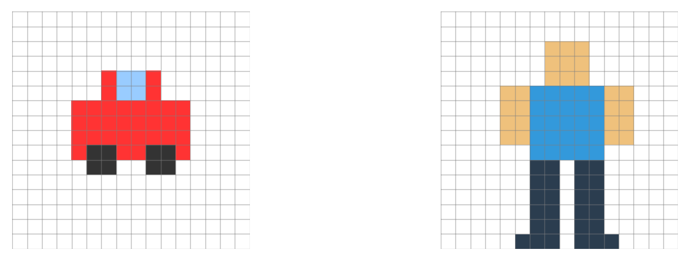
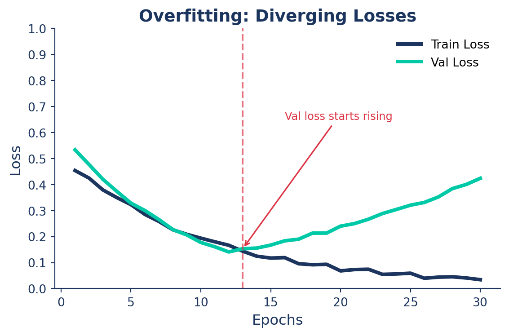
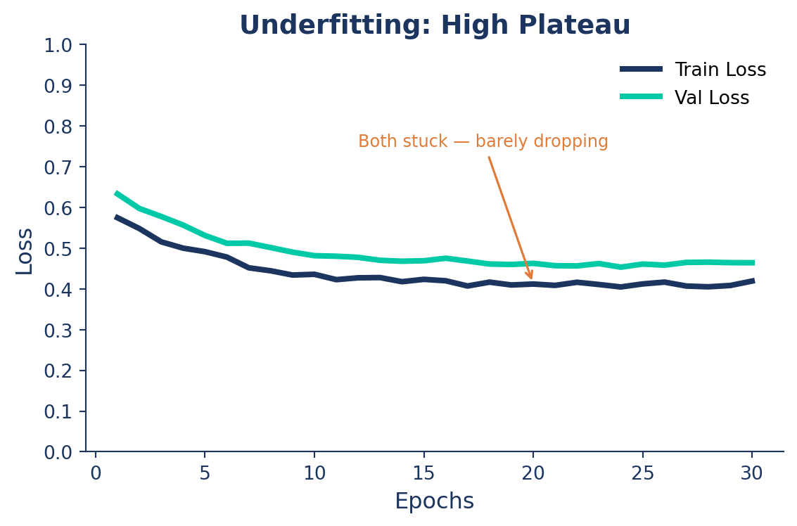
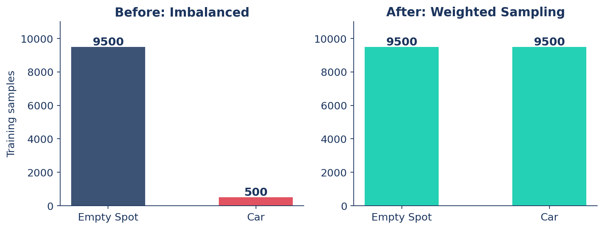

Ultralytics YOLO Foundations: Part 4
Custom Data & Training
2026-05-14
How a Model Learns
From a single feature to a full classifier — built up step by step.
From Part 1: f(image) → output
In Part 1: a model is f, learned from data, mapping image → output.
That’s what it does — not how it learns.
This section: how f goes from random guesses to useful predictions.
We’ll build it up from a toy color classifier, then scale to YOLO.
The Learning Loop
Training isn’t magic; it’s a repetitive cycle of refinement.
- Define a Function: Create a mapping from data to predictions (\(f\)).
- Evaluate Performance: Measure exactly how “wrong” the current function is (Loss).
- Optimize & Repeat: Update the function’s parameters to reduce that error (Optimization).
We start with a guess and “tune” the knobs until we’re happy with the results.
A Naive Classifier from Color
Task: Is this a red car? — output should eventually be a probability.
Simplest feature: average red pixel value (0-255).
\[f(\text{image}) \approx x_{\text{red}}(\text{image})\]
From a Number to a Probability
The average red value lands in [0, 255] — but it’s just a raw number. To learn, we need parameters.
Add weights to calculate a score (\(z\)):
\[z = w \cdot x_{\text{red}} + b\]
- \(w\) (Weight): How much does “redness” matter?
- \(b\) (Bias): Baseline assumption (are red cars common?)
Now \(z\) depends on \(w\) and \(b\) — but it’s unbounded: it can go negative or exceed 1.
Problem: We need a function that maps any real number → [0, 1] for a probability.
The Sigmoid
The Squashing Function
\[\sigma(z) = \frac{1}{1 + e^{-z}}\]
- Large +z → near 1.0
- Large −z → near 0.0
- z = 0 → 0.5

Prediction: \[f(\text{image}) = \sigma(\underbrace{w \cdot x_{\text{red}} + b}_{\text{score } z})\]
Why Metrics Aren’t Enough for Learning
We have predictions. From Part 3, we know how to grade them — mAP, Precision, Recall. So why not just train against those?
Discrete (Problem)
mAP, Precision, Recall
Small weight changes → zero change in the metric.
Smooth (Solution)
Training Loss
Every tiny adjustment is mathematically measurable.

So we need a smooth substitute. Enter the loss.
We skip deeper technical details to keep the intuition front and center.
Measuring Wrongness — The Idea
To evaluate our model, we need a mathematical definition of “wrongness.”
🤔 Instinct
Measure the raw difference between target and prediction.
\(\text{err} = y - f(x)\)
🚨 The Flaw
Target = \(0\), Prediction = \(1\)
\(0 - 1 = \mathbf{-1}\)
The model seeks the lowest number. It thinks \(-1\) is better than \(0\) (perfect)!
💡 The Fix
A mistake of \(-1\) is just as bad as \(+1\).
Square the difference:
\(\text{err}^2 = (y - f(x))^2\)
Measuring Wrongness — Example
Let’s start with a random guess: w = 0.06, b = -14.0
Image A — Red Car
\(x_{\text{red}} \approx 247\)
Image B — Not a Red Car
\(x_{\text{red}} \approx 212\)

Score: \(z = 0.06(247) - 14.0 = 0.82\)
Prediction: \(f(x) = \sigma(0.82) \approx 0.69\)
\(\text{err} = (1 - 0.69)^2 = \mathbf{0.10}\)
Score: \(z = 0.06(212) - 14.0 = -1.28\)
Prediction: \(f(x) = \sigma(-1.28) \approx 0.22\)
\(\text{err} = (0 - 0.22)^2 = \mathbf{0.05}\)
Formalizing the Loss (MSE)
To get a single metric for the whole dataset, we average these squared errors.
For our two images: Loss = \(\frac{0.10 + 0.05}{2}\) = 0.075
This is called Mean Squared Error (MSE): \[\mathcal{L}_{\text{MSE}} = \frac{1}{n}\sum_{i=1}^{n}\bigl(y_i - f(x_i)\bigr)^2\]
Note: We use MSE here for simplicity to build intuition. In practice, modern classifiers use Cross-Entropy Loss, which mathematically penalizes highly-confident wrong guesses much more harshly.
Following the Gradient
Two knobs (w, b). The gradient points where loss drops fastest. Step a little that way. Repeat. → gradient descent.
- Learning Rate: The size of the step. Too large = overshoot; too small = takes forever.
- Epochs: Repeating this process for the entire dataset.
Scaling Up: From Color to YOLO
Our toy: 2 weights, 1 feature (avg red).
YOLO — same idea, scaled:
- Millions of weights, learns its own features via Convolutions (filters that automatically detect edges/textures/shapes).
- Answers many questions per object: where (box), what (class), how sharp (boundary).
One loss isn’t enough → YOLO sums several, one per question.
YOLO’s Loss: Three Signals
Total loss = sum of three components, each catching a different mistake:
| Component | Also called | What it penalizes |
|---|---|---|
| Box Loss | box_loss |
Wrong coordinates |
| Class Loss | cls_loss |
Wrong label |
\[\mathcal{L}_{\text{total}} = \lambda_{\text{box}}\mathcal{L}_{\text{box}} + \lambda_{\text{cls}}\mathcal{L}_{\text{cls}}\]
5. Practical Data Pipeline & Labeling
Formatting your data and preparing labels.
Train vs. Validation
To train a robust AI, split your data:
- Train Set (~80%): Data the model actively learns from.
- Validation Set (~20%): Unseen data evaluated during training to measure performance (
mAP).
Crucial: Never train on validation data! This causes Data Leakage where the model memorizes answers but fails in the real world.
Split your data automatically using Ultralytics Data Split or using the Platform.
Data Leakage: The Silent Killer
The Problem: Validation/test data accidentally ends up in the training set.
The Danger: Val metrics look “perfect,” but the model fails in production.
How to Avoid: - Use autosplit() for automatic, safe partitioning. - Avoid manually copying images between split folders. - Check for duplicates/hashes before training.
Suspiciously perfect metrics? Check for leakage!
Understanding the Data Setup
Different formats for different tasks:
- Classification: Relies entirely on folder structure (e.g.,
train/cat/,train/dog/). - Detection & Segmentation: Uses standard YOLO format, pairing images with
.txtlabel files.
Inside the Labels
Object Detection (
.txtBounding Box):<class_index> <x_center> <y_center> <width> <height>Instance Segmentation (
.txtPolygon):<class_index> <x1> <y1> <x2> <y2> ... <xn> <yn>
⚠ Note: Coordinates must always be normalized (0.0 to 1.0) to keep annotations independent of image resolution!
The data.yaml File
Linking indices to names and defining paths.
Labeling Your Own Data
Typing coordinates manually is impossible. Use specialized tools to draw boxes or polygons visually:
- Upload your images to a platform like Ultralytics HUB, Roboflow, or CVAT.
- Draw bounding boxes or polygons visually on the images.
- Export in YOLO format to get the standard dataset structure ready for training!
Docs Reference: Ultralytics HUB
AutoLabeling with SAM
Speed up the process using foundational models to do the heavy lifting:
- Zero-Shot Labeling: Bypass manual labeling using SAM (Segment Anything Model) or FastSAM.
- Run the model on your raw dataset to automatically generate masks and bounding boxes.
- These models understand objects generically without needing custom training!
- Simply review and correct the auto-generated labels—drastically faster than drawing every box from scratch.
Docs Reference: Segment Anything Models (SAM)
6. Kickoff Training
Hyperparameters and Configs.
Training
We can start training directly from the command line or Python API:
Resuming Training
If your training is interrupted (e.g., power outage or timeout), you can easily resume it from the last saved weights without losing progress!
Transfer Learning
.pt(Pretrained weights): Starts with general features (edges, shapes) from large datasets. Fast training, needs little data. (Always recommended!).yaml(Architecture Definition): Blank blueprint. Random weights, meaning you train entirely from scratch.
Use a .pt model for all custom dataset training to leverage Transfer Learning.
Important Hyperparameters
epochs(Default: 100): Pass through the ENTIRE dataset. More = learns more, but risks overfitting.batch(Default: 16): Images processed at once.- Higher = faster, stable, takes more GPU memory.
- Smaller = adds noise, longer training.
- Pro-tip: Use
batch: -1for AutoBatch to maximize your GPU memory!
imgsz(Default: 640): Target image size. Larger sizes (e.g., 1024) capture more detail but use more RAM.device(Default: ’’): Specify GPUs (e.g.,device=0,1) to trigger multi-GPU training!Learning Rate (
lr0) (Default:0.01): Controls step size—too large and the ball overshoots, too small and training is slow.Weight Decay (Default:
0.0005): Penalizes large weights to prevent memorization (🔴 Overfitting).Patience (
patience) (Default:100): Stop training if validation metrics haven’t improved for \(N\) epochs.
Using Config Files (Best Practice)
For reproducibility, put arguments into an experiment.yaml file:
Run with:
Experiment Tracking
Ultralytics seamlessly integrates with MLOps tools to log metrics (mAP, loss) and visuals (confusion matrix) during training.
Supported Integrations: - TensorBoard (Built-in) - Weights & Biases (W&B) - Comet / ClearML / MLflow
Docs Reference: Integrations
Diagnosing & Fixing Training
Reading the curves to fix what training isn’t learning.
The Training Spectrum
Every training run lands somewhere on this spectrum — knowing where is the first step to fixing it.
🔴 Overfitting
Model memorizes training data.
- Train mAP >> Val mAP
- Val loss starts rising
Too much capacity for your data
🟢 Just Right
Model generalizes to new data.
- Train ≈ Val, both high
- Both losses converge low
The goal — stay here
🟠 Underfitting
Model never learned the patterns.
- Both Train and Val mAP low
- Losses barely decrease
Too little capacity or training
🔴 Overfitting: The Symptom
The model memorizes training data instead of learning general patterns.
What you see:
- Train loss ↓, Val loss ↑
- Train mAP climbs, Val mAP stalls
- Growing gap between the two curves

🟠 Underfitting: The Symptom
The model hasn’t learned the patterns — too simple, over-constrained, or undertrained.
What you see:
- Both Train and Val mAP low and flat
- Loss barely moves after the first epochs
- Curves close together — but both stuck high

Class Imbalance: When Rare Classes Get Ignored
In a parking lot you’ll naturally collect 9,500 empty frames for every 500 cars — and the model can hit 95% accuracy by always predicting “empty.”

Fix: oversample the minority class so the model sees Cars often enough to learn them.
Technical Guide: Class Balancing with YOLO
Data Augmentation (Albumentations)
The training-side fix for 🔴 overfitting — show the model more variety so it can’t memorize.
import albumentations as A
from ultralytics import YOLO
model = YOLO("yolo26n.pt")
# Define custom transforms
custom_transforms = [
A.Blur(blur_limit=7, p=0.5),
A.HorizontalFlip(p=0.5),
A.RandomBrightnessContrast(p=0.5),
]
# Train the model with custom transforms
model.train(data="data.yaml", epochs=100, augmentations=custom_transforms)Diagnosing Your Training Run
| What you see | Problem | Actions |
|---|---|---|
| Train mAP >> Val mAP, Val loss rising | 🔴 Overfitting | Add augmentation · increase weight_decay · set patience |
| Both mAP low and flat, loss barely moves | 🟠 Underfitting | Bigger model · more epochs · raise lr0 · lower weight_decay |
| One class dominates predictions | ⚖️ Imbalance | Oversample minority · class weights |
| Val metrics suspiciously perfect | 🕳️ Leakage | Re-split with autosplit() · de-duplicate |
| Both losses converging, mAP climbing | 🟢 Healthy | Continue training or deploy |
Conclusion
Summary
- Fundamentals: Intuitive learning loop, terminology (Epoch, mAP), and avoiding data leakage.
- Data Pipeline: YOLO dataset structure,
data.yaml, manual labeling, and auto-labeling with SAM. - Training Kickoff: Transfer learning, resuming interrupted runs, and using config files.
- Optimization: Tuning hyperparameters (
lr0,batch,imgsz) and tracking experiments. - Diagnose & Fix: Identifying and resolving overfitting, underfitting, and class imbalance.
Next Steps
Next up: Part 5 — Deployment
- Export models to optimized formats like ONNX, OpenVINO, and TensorRT.
- Run inference with exported models.
- Take your model to production!
Q&A
Thank You!
Any questions?